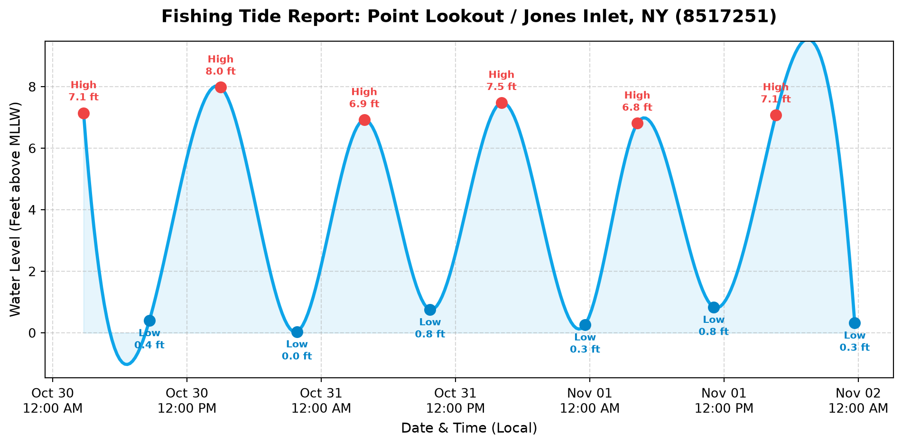

Interactive K-12 Oceanography, API Data Fetching, and Coastal Tide Modeling
Figure 1: Extracting coastal tidal data using the NOAA CO-OPS API.
Project Overview
Welcome to the Tide Predictor Lab. Knowing the tides is essential for successful surfcasting and boat fishing along Long Island’s South Shore. In this lab, students act as coastal oceanographers and anglers by building an interactive Python tool that pulls live water level predictions from the NOAA Tides & Currents API.
You will design an interactive map interface for regional fishing hotspots (such as Jones Beach and Long Beach), fetch real-time tide data for a user-selected location, and plot the high and low tide cycles to find the perfect time to cast your line!
Before we can pull tide data, we need to know where we are fishing. NOAA uses unique 7-digit Station IDs for all their coastal buoys and sensors.
Let’s use the folium library to create an interactive web map of the South Shore of Long Island. Click on the red markers on the map below to find the Station ID of your favorite fishing spot!
import folium# Coordinates for the South Shore of Long Islandmap_center = [40.60, -73.58]tide_map = folium.Map(location=map_center, zoom_start=11)# Dictionary of popular South Shore fishing spots / NOAA stationsstations = {"Jones Beach (Coast Guard Station)": {"id": "8517137", "coords": [40.5917, -73.5067]},"Long Beach (Reynolds Channel)": {"id": "8517562", "coords": [40.5883, -73.6650]},"Point Lookout (Jones Inlet)": {"id": "8517251", "coords": [40.5917, -73.5800]},"Freeport (Baldwin Bay)": {"id": "8517276", "coords": [40.6300, -73.5933]}}# Add an interactive marker for each stationfor name, info in stations.items(): popup_text =f"<b>{name}</b><br>Station ID: <code>{info['id']}</code>" folium.Marker( location=info['coords'], popup=folium.Popup(popup_text, max_width=250), tooltip=f"Click for {name} ID", icon=folium.Icon(color="red", icon="info-sign") ).add_to(tide_map)# Display the interactive map directly on the page!tide_map
Make this Notebook Trusted to load map: File -> Trust Notebook
Step 2: Building the NOAA API Fetcher
Now that you have your interactive map, click a marker to find the Station ID for where you want to fish (For example, Long Beach is 8517562 and Point Lookout is 8517251).
Next, we will write a Python function using the requests library to fetch the live tide data from the government servers in JSON format.
import requestsimport datetimedef get_tides(station_id, start_date, end_date): url ="https://api.tidesandcurrents.noaa.gov/api/prod/datagetter"# Set the parameters for our API call params = {"begin_date": start_date,"end_date": end_date,"station": station_id,"product": "predictions","datum": "MLLW", # Mean Lower Low Water (standard)"time_zone": "lst_ldt", # Local Time"interval": "hilo", # Only fetch High and Low tide peaks"units": "english", # Feet"format": "json"# Using JSON format }# Send the request and store the JSON response response = requests.get(url, params=params) data = response.json() times = [] values = [] types = [] # 'H' for High Tide, 'L' for Low Tide# Parse the dataif"predictions"in data:for item in data["predictions"]:# Convert string timestamp into a real datetime object dt_obj = datetime.datetime.strptime(item["t"], "%Y-%m-%d %H:%M") times.append(dt_obj) values.append(float(item["v"])) types.append(item["type"])else:print(f"Error fetching data for station {station_id}. Check your ID and Dates.")return times, values, types
Step 3: User Input & Visualizing the Tides
You have the data fetcher ready—now let’s draw the wave! We will use matplotlib to plot a smooth curve between the high and low tide peaks so you know exactly when the tide is rolling in.
import matplotlib.pyplot as pltimport matplotlib.dates as mdatesimport numpy as npfrom scipy.interpolate import make_interp_splinedef plot_tides(times, values, types, location_name): fig, ax = plt.subplots(figsize=(10, 5))# Convert datetime objects to numbers for smooth curve interpolation time_nums = mdates.date2num(times)# Create a smooth sine-like wave between the High/Low pointsiflen(times) >3: time_smooth = np.linspace(time_nums.min(), time_nums.max(), 300) spl = make_interp_spline(time_nums, values, k=3) values_smooth = spl(time_smooth) ax.plot(mdates.num2date(time_smooth), values_smooth, linestyle='-', color='#0ea5e9', linewidth=2.5, label="Tide Level") ax.fill_between(mdates.num2date(time_smooth), values_smooth, color='#0ea5e9', alpha=0.1)else: ax.plot(times, values, linestyle='-', color='#0ea5e9', linewidth=2)# Plot the exact High and Low peak markersfor t, v, tide_type inzip(times, values, types): color ='#ef4444'if tide_type =='H'else'#0284c7' label_prefix ="High"if tide_type =='H'else"Low" ax.scatter(t, v, color=color, s=70, zorder=5) ax.annotate(f"{label_prefix}\n{v:.1f} ft", (t, v), textcoords="offset points", xytext=(0,10if tide_type=='H'else-22), ha='center', fontsize=8, fontweight='bold', color=color)# Format the X-axis for clean dates ax.xaxis.set_major_formatter(mdates.DateFormatter('%b %d\n%I:%M %p')) plt.xticks(rotation=0)# Add some padding to the Y-axis so labels don't get cut off ax.set_ylim(min(values) -1.5, max(values) +1.5) ax.set_title(f"Fishing Tide Report: {location_name}", fontsize=14, fontweight='bold', pad=15) ax.set_xlabel("Date & Time (Local)", fontsize=11) ax.set_ylabel("Water Level (Feet above MLLW)", fontsize=11) ax.grid(True, linestyle='--', alpha=0.5) plt.tight_layout() plt.show()
Try It Yourself: Interactive Prompt
When running this script on your own computer in VS Code or Jupyter, use Python’s input() function so the user can type in any Station ID they want from the map:
# --- RUN THIS IN YOUR OWN TERMINAL / NOTEBOOK ---target_station =input("Enter the 7-digit NOAA Station ID from the map (e.g., 8517251): ")trip_start ="20261030"trip_end ="20261101"tide_times, tide_heights, tide_types = get_tides(target_station, trip_start, trip_end)if tide_times: plot_tides(tide_times, tide_heights, tide_types, f"Station {target_station}")
Live Output Demo: Point Lookout / Jones Inlet (8517251)
Here is what your code outputs when a user enters 8517251 for a 3-day fishing trip at Point Lookout / Jones Beach:

Lab Objectives & Integration
This lab bridges the gap between raw data science and practical, real-world application. Students often struggle to see why parsing data matters; tying it directly to a tangible event—like knowing when to cast a line at Jones Beach or Long Beach—cements the utility of API integration.
Computer Science Skills: API structure, REST parameters, HTTP GET requests, JSON traversal, interactive GIS mapping (folium), and user input variables.
Math & Oceanography: Understanding sine wave patterns, spline interpolation, Mean Lower Low Water (MLLW) datums, and gravitational tidal modeling.
Common Pitfalls & Troubleshooting
JSON vs. XML: If students attempt to parse the NOAA API using XML and BeautifulSoup, they will often run into AttributeError issues due to complex tag nesting. By forcing format=json in the parameters, Python’s native dictionary handling makes extracting item["t"] and item["v"] significantly easier.
Date Time Parsing: Matplotlib will severely cluster the X-axis if it receives raw string timestamps (e.g., "2026-10-30 08:00"). Ensure students correctly import datetime and use strptime() to convert the strings into objects.
Harmonic vs. Subordinate Stations: Some subordinate NOAA stations only provide High/Low (hilo) predictions rather than 6-minute continuous data. In Step 3, we use scipy spline interpolation to draw a smooth, realistic tidal wave between the high and low peak points!
Expansion Ideas
Lunar Correlation: Have students look up the lunar phase for their chosen dates and compare the amplitude of the tides during a Full Moon (Spring Tide) versus a Half Moon (Neap Tide).
Currents vs. Tides: Have advanced students modify the API call to pull Currents data (knots) instead of water level, exploring how water speed impacts boat drifting.